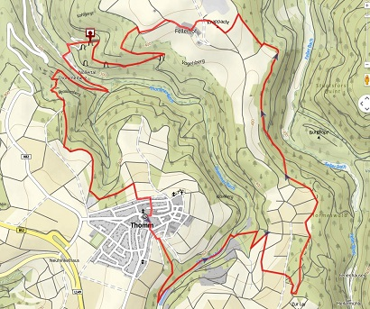
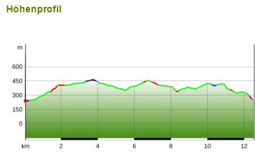

<div data-role="page" id="sww_karte">
    <div data-role="header" data-add-back-btn="true" data-back-btn-text="Zur&uuml;ck">
        <h1>Schiefer-Wacken-Weg / Karte</h1>
    </div>

    <div role="main" class="ui-content">

<center>
<b>Übersichtskarte</b><br>
<a href="#popupPhoto" data-rel="popup" data-position-to="window" class="ui-btn ui-corner-all ui-shadow ui-btn-inline" data-transition="fade"></a>
<div data-role="popup" id="popupPhoto" class="photopopup" data-overlay-theme="a" data-corners="false" data-tolerance="30,15">
    <a href="#" data-rel="back" class="ui-btn ui-corner-all ui-shadow ui-btn-a ui-icon-delete ui-btn-icon-notext ui-btn-right">Close</a>
</div>

<b>Höhenprofil</b><br>
<a href="#popupPhoto1" data-rel="popup" data-position-to="window" class="ui-btn ui-corner-all ui-shadow ui-btn-inline" data-transition="fade"></a>
<div data-role="popup" id="popupPhoto1" class="photopopup" data-overlay-theme="a" data-corners="false" data-tolerance="30,15">
    <a href="#" data-rel="back" class="ui-btn ui-corner-all ui-shadow ui-btn-a ui-icon-delete ui-btn-icon-notext ui-btn-right">Close</a>
</div>

</center>

    </div>


    <!--div data-role="footer">
        <h4>Page Footer</h4>
    </div-->
</div>